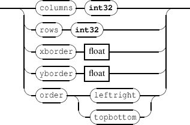
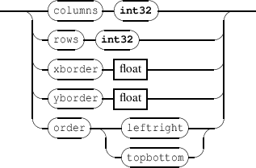
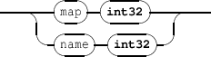

Chapter 6
Type specific messages
Some of the messages are specific to the component type.
6.1 Pen control
Specific pen messages accepted by the components types rect | ellipse | polygon | curve | line |
graph | fast graph | grid.
-
-
penMsg 
- penColor controls the pen color. The color should be given in the RGBA space. The default value is
opaque black (0 0 0 255).
- penAlpha, pendAlpha controls the pen transparency only. See section 2.3 p.16 for the expected
- penWidth controls the pen width. The default value is 0 (excepted for line objects, where 1.0 is the
default value). It is expressed in arbitrary units (1 is a reasonable value).
- penStyle controls the pen style.
-
-
penstyle 
The pen style default value is solid.
EXAMPLE
Setting a rectangle border width and color:
/ITL/scene/rect set rect 0.5 0.5 ;
/ITL/scene/rect penWidth 2. ;
/ITL/scene/rect penColor 255 0 0 ;
6.2 Brush control
Specific brush messages accepted by the components types rect | ellipse | polygon | curve |
layer.
-
-
brushMsg 
- brushStyle controls the brush style.
The brush style default value is solid.
For the layer object, the brush style default value is none.
EXAMPLE
Setting a rectangle style :
/ITL/scene/rect set rect 0.5 0.5 ;
/ITL/scene/rect brushStyle dense4;
6.3 Width and height control
Specific width and height messages accepted by the components types rect | ellipse | graph | fastgraph
| grid.
-
-
widthMsg 
6.4 Symbolic score management
Messages accepted by the components types gmn | gmnstream | gmnf.
-
-
scoreMsg 
- page: set the score current page
- dpage: moves the score current page
- pageFormat: set the page format. The parameters are the page width and height. Note that the
message has no effect when the score already includes a \pageformat tag.
- columns: for multi pages display: set the number of columns.
- rows: for multi pages display: set the number of rows.
- pageCount: a read only attribute, gives the score pages count.
- systemCount: a read only attribute, gives the number of systems on each of the score pages. The
result is given as a list systems count ordered by page number (index 0 is page 1, etc.).
EXAMPLE
Displaying a multi-pages score on two pages starting at page 3:
/ITL/scene/myScore columns 2 ;
/ITL/scene/myScore page 3 ;
-
-
gmnstreamMsg 
- write: add the stream in parameter to the global stream
- clear: reinitialize the stream
EXAMPLE
Writing a score in 3 steps:
/ITL/scene/myScore set gmnstream "[ c";
/ITL/scene/myScore write " d e";
/ITL/scene/myScore write " f]";
6.5 The ’grid’ object
The grid object provides a pre-defined time to graphic mapping organized in columns and row. By default, it is not
visible (white, transparent) but supports all the attributes of rectangles (color, pen, effects, etc.). Each
element of a grid has a duration that is computed as the grid duration divided by the total number
of elements ( columns x rows) and is placed in the time space from the date 0 to the end of the grid
duration.
-
-
gridMsg 
- columns set the number of columns of the grid,
- rows set the number of rows of the grid,
- xborder set the horizontal spacing between the elements of the grid (default is 0.),
- yborder set the vertical spacing between the elements of the grid (default is 0.),
- order defines the time order of the elements. By default, elements are organized from left to right
first and from top to bottom next (leftright). The topbottom parameter changes this order from
top to bottom first and from left to right next.
EXAMPLE
Creating a 10 x 10 grid organized from top to bottom with a border:
/ITL/scene/grid set grid 10 10 ;
/ITL/scene/grid xborder 3. ;
/ITL/scene/grid yborder 3. ;
/ITL/scene/grid order topbottom ;
6.6 The ’layer’ object
The layer object provides a container of rectangular shape that is not drawn but creates a node to distinguish a
group of objects from the rest. It can however be drawn by using the brush control (default brushStyle is
’none’).
6.7 The ’debug’ nodes
Each component includes a static debug nodes provided to give information about components.
-
-
debugMsg 
- map is used to display the time to graphic mapping. The parameter is a boolean value. Default is 0.
- name is used to display both the object name and bounding box. The parameter is a boolean value.
Default is 0.